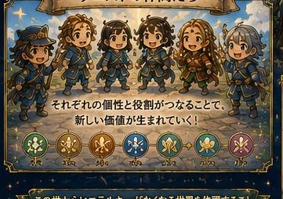
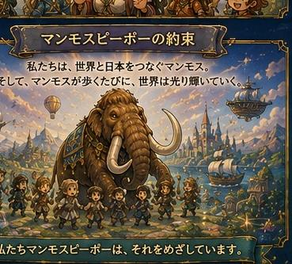

Guild Hall ─ 合同会社マンモスピーポー
Create a New World
新しい世界を創るクエスト
アンジェロロジーを「知る」だけではなく、「生きる」。
その実践の場として生まれたのが、合同会社マンモスピーポーです。
ここには社長も部下もありません。
全員が同じ立場で、自分の才能を活かしながら、新しい世界を一緒に創っていく冒険者たち。

それぞれの得意を持ち寄り、一人では見られない景色を仲間と創り上げる。

あなたも、マンモスピーポーとコラボして新しい世界を創る仲間になりませんか?